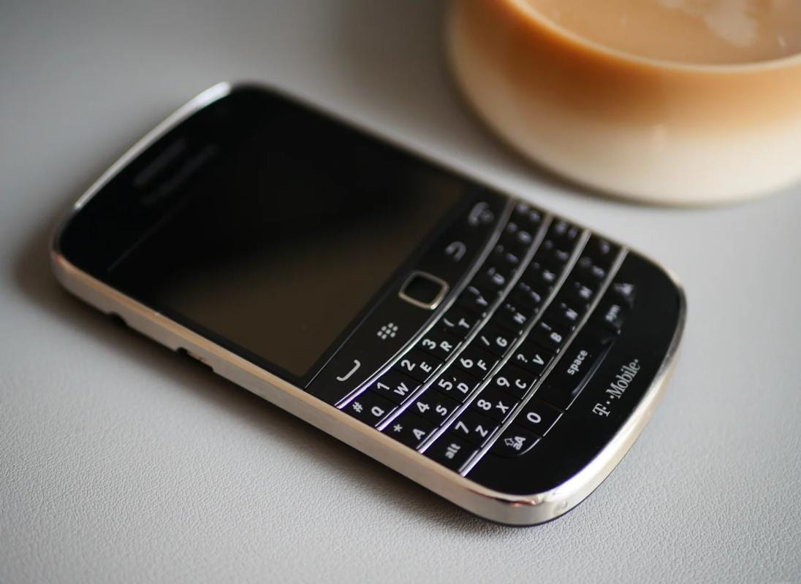

黑莓 Bold 9900

黑莓全键盘巅峰之作，触屏与实体键盘首次合体。
客观评测
Bold 9900 搭载 1.2GHz 单核骁龙处理器与 768MB 内存，在 2011 年已属中端配置。2.8 英寸 640×480 屏幕像素密度约 286ppi，显示精细度尚可。500 万像素摄像头成像平淡，无前置镜头。其最大硬件亮点是把触控屏与经典实体全键盘结合，机身厚度控制在 10.5mm 左右，是黑莓最薄的全键盘机型。1230mAh 电池配合低功耗系统，待机表现依然可圈可点。
主观点评
拿起 9900，金属边框的冰凉与键粒恰到好处的反馈让人立刻明白何为'黑莓手感'。它在触屏时代固执地保留了键盘的灵魂，是实体键盘智能手机的绝唱之一。今天收藏它，收起的是一段邮件提醒声里的黄金岁月，是商务精英人手一台的从容年代，情怀价值远大于实用价值。
优点与不足
- 实体全键盘手感顶级，打字精准快速，至今仍被键粉怀念
- 不锈钢加碳纤维的用料扎实，商务质感出众
- 邮件推送服务效率极高，是当年移动办公标杆
- 系统生态日渐凋零，应用数量远逊于安卓和 iOS
- 单核处理器和小屏幕在智能机大战中迅速落伍
参数规格
| 屏幕 | 2.8 英寸电容触控屏，640×480，支持触控 |
|---|---|
| 处理器 | 高通骁龙 MSM8655 1.2GHz 单核 |
| 内存 | 768MB RAM |
| 存储 | 8GB，支持 microSD 卡扩展 |
| 摄像头 | 500 万像素，无前置 |
| 系统 | BlackBerry OS 7 |
| 电池 | 1230mAh，不可拆卸 |
| 网络 | 支持 3G，Nano-SIM |
| 键盘 | 经典 35 键 QWERTY 实体全键盘 |
| 机身材质 | 不锈钢边框＋碳纤维后盖 |
| 重量 | 约 130g |